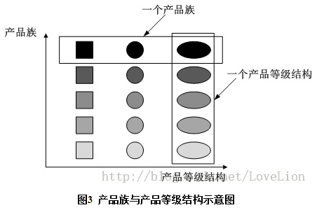

工厂模式(factory)
1. 工厂方法模式
定义:一个用于创建对象的接口,让子类决定实例化哪个类.工厂方法使一个类的实例化延迟到子类.
优点:良好的封装性,降低耦合性,扩展性优秀
1.1. 简单工厂模式
建立一个工厂实体类，对实现了同一接口的产品类进行实例的创建。通过提供一个静态方法,返回实例,通过方法参数来决定。
1.2. 多个工厂方法模式
建立一个工厂抽象类,通过与产品对应的工厂实现类对实现了同一个接口的产品类进行实例的创建.以此来避免单一工厂的方法过于巨大.
1.3. 替代单例模式
通过工厂方法模式来实现单例,单例类私有化构造方法,工厂类通过反射创建单独的实例并返回,还可以扩展延时初始化lazy loading,通过管理一个存放实例的Map集合缓存.
public class ProductFactory{
/** 产品单例实例的存放区 */
private static final Map<Class,Product> prMap = new HashMap();
public static synchronized Product createProduct(Class<? extends Product> type) throws Exception{
Product product = null;
if(prMap.containsKey(type)){
product = prMap.get(type);
}else{
product = type.newInstance();
prMap.put(type,product);
}
return product;
}
}
2. 抽象工厂模式
工厂方法模式有一个问题就是，类的创建依赖工厂类，如果想要拓展程序，必须对工厂类进行修改，这违背了闭包原则，所以，就用到抽象工厂模式，创建抽象工厂类，这样一旦需要增加新的功能，直接增加新的工厂实现类就可以了，不需要修改之前的代码。
定义:为创建一组相关或相互依赖的对象提供一个接口,而且无须指定它们的具体类.
产品等级结构：产品等级结构即产品的继承结构，如一个抽象类是CPU，其子类有AMD处理器、Intel处理器，则抽象CPU与具体品牌的CPU之间构成了一个产品等级结构
产品族：在抽象工厂模式中，产品族是指由同一个工厂生产的，位于不同产品等级结构中的一组产品，如PC工厂生产的AMD处理器、AMD显卡，AMD处理器位于CPU产品等级结构中，AMD显卡位于显卡产品等级结构中，AMD处理器、AMD显卡构成了一个产品族。

在图3中，不同颜色的多个正方形、圆形和椭圆形分别构成了三个不同的产品等级结构，而相同颜色的正方形、圆形和椭圆形构成了一个产品族，每一个形状对象都位于某个产品族，并属于某个产品等级结构。图3中一共有五个产品族，分属于三个不同的产品等级结构。我们只要指明一个产品所处的产品族以及它所属的等级结构，就可以唯一确定这个产品。
使用场景:在拥有同一主题的多个产品等级结构的情况下,把各个具体产品划分出一个个产品族,以具体工厂分别实现各个产品族内各个产品的产生为目的,抽象出抽象工厂,抽象工厂和具体工厂组成一个产品族等级结构.
优点:封装性,产品族内的约束为非公开状态,在工厂内实现.
缺点:对产品族的扩展非常困难,违反开闭原则